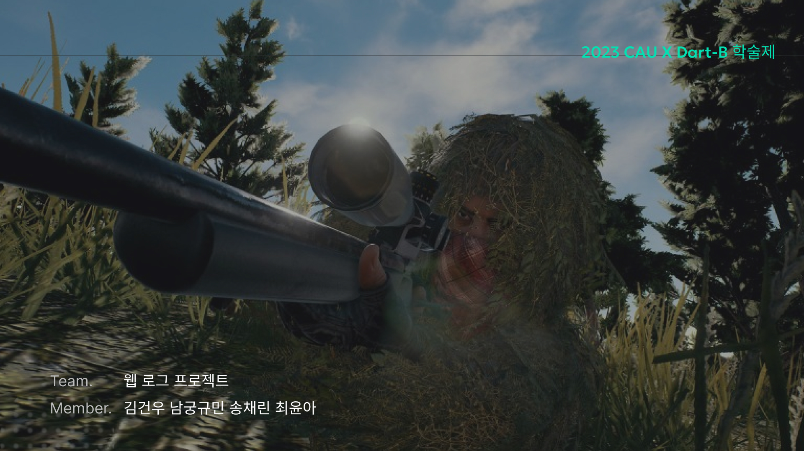
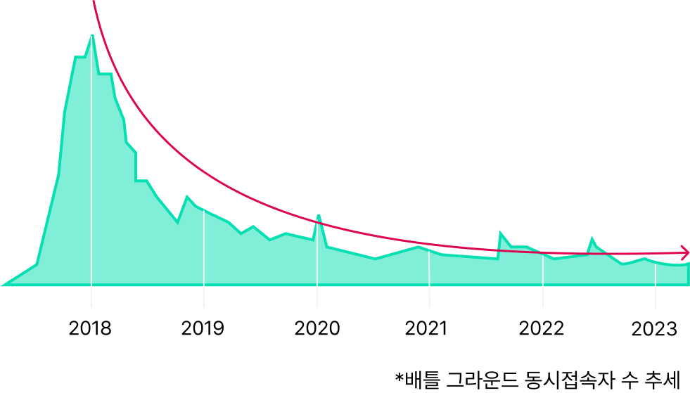

110만+
분석 데이터 건수
5개 유형
유저 클러스터 도출
3단계
맞춤 AI 난이도 제안
Problem Recognition→
Problem Definition→
Data Collection→
Preprocessing→
Analysis→
Insight
01 · Problem Recognition
플레이 수준에 맞는 몰입 경험

🗺동접자 하락 그래프
매년 하락하고 있는 배틀그라운드 동시 접속자 추세
배경
배틀그라운드는 2018년 이후 동시접속자 수가 지속적으로 하락. 하락 원인을 찾기 위해 게임 데이터 EDA 진행

🗺배틀그라운드 내 고수 분포
게임 데이터 확인 결과, 초보 유저 비율이 매우 낮음을 발견
현황 확인
실제로 실력별 유저 분포를 살펴본 결과, 고수에 밀집되어 초보 플레이어의 플레이 비율이 매우 낮다는 것을 발견

🗺유저 실력별 경험 그래프
게임 실력과 맞지 않는 플레이 난이도는 몰입 경험을 떨어뜨리는 문제
문제 가설
- 초보에게 어려운 난이도의 게임은 '불안함'을, 고수에게 쉬운 난이도는 '지루함'을 제공함
- 이때 배틀그라운드는 매칭마다 부족한 인원을 AI 봇으로 충당하고 있음
- 그러나 현재 고수 유저에게는 AI가 너무 쉽고, 초보 유저에게는 AI가 너무 어려운 구조
💡
가설 설정
유저의 실력별로 AI봇의 행동 양식을 고도화하면, 초보와 고수가 모두 만족하는 게임 플레이가 가능할 것이다.
02 · Problem Definition
프로젝트 탐구 문제
03 · Data Collection
PUBG API 데이터 수집
데이터 소스
PUBG 오픈 API 가공
console, steam, kakao 3개 채널
수집 규모
약 110만 건
2023.11.01 – 11.14 (2주간 게임 데이터)
| 분류 | 변수명 | 설명 |
|---|---|---|
| Kill 관련 | damageDealt | 가한 데미지량 |
kills | 킬 수 | |
killStreaks | 연속 킬 수 | |
killPlace | 킬 기준 순위 | |
| 아이템 관련 | boosts | 부스트 아이템 사용량 |
heals | 회복 아이템 사용량 | |
weaponAcquired | 무기 획득량 | |
| 이동 관련 | walkDistance | 도보 이동 거리 |
rideDistance | 차량 이동 거리 | |
| 결과 | winPlace | 게임 최종 순위 |
04 · Analysis — 탐구 문제 1
매치에 참여하는 AI는 유저의 실력을 적절히 반영하고 있는가?
Step 1 · 순위 등급화
5판 이상 플레이한 유저 대상, 매치 평균 순위를 10단계 rank로 등급화 했습니다.
| winPlace 범위 | rank |
|---|---|
| 1 – 10 | 1 (최상위) |
| 11 – 20 | 2 |
| 21 – 30 | 3 |
| 41 – 50 | 5 |
| 71 – 80 | 8 |
| 91 – 100 | 10 (최하위) |
Step 2 · rank 예측 회귀 모델
AI 봇의 rank 예측을 위해 회귀 모델을 활용 했습니다.
목적
AI 봇과 실제 유저의 플레이 로그를 동일한 모델에 입력하여 rank를 예측하고, 양쪽 분포를 비교
모델
6개 회귀 모델 비교: Linear, Ridge, Lasso, Random Forest, Decision Tree, K-Neighbor
검증
10-Fold Cross Validation / RMSE 기준 → Random Forest가 최저 RMSE로 최적 모델 선정
Step 3 · 유저 vs AI rank 분포 비교
Random Forest로 예측한 유저 rank 분포(빨강)와 AI rank 분포(파랑)를 매치별로 비교한 결과, 두 분포가 크게 불일치하는 것을 확인했습니다.

🗺유저와 AI봇 간 실력 불일치
매칭 데이터 확인 결과, 유저 Rank와 AI Rank가 비례하지 않음
📊
탐구 문제 1 결론
AI는 유저 실력을 적절히 반영하지 못하고 있다. 유저 rank 분포와 AI rank 분포가 불균형하며, 현재 AI 봇은 실력 수준에 관계없이 비슷한 행동 패턴을 보인다.
05 · Analysis — 탐구 문제 2
고수와 초보의 게임 플레이는 어떤 점이 다른가?
T-test로 상/하위 20% 유저 그룹의 유의미한 차이가 있는 행동 특성 9개를 추출했습니다. 단순히 '고수'와 '초보'로 유저를 일반화할 수 없기에 해당 9개 컬럼을 기준으로 서로 다른 플레이 스타일을 가진 유저 그룹을 분류했습니다. 이때, K-means 클러스터링을 활용해 총 5가지 유저 그룹이 도출되었습니다.

📊t-test 유의 컬럼 추출
상하위 20% 그룹 간 t-test 결과

🗺유의 칼럼 상관성
유의 칼럼 9개 추출 및 K-Means 클러스터링 적용
방법론
상위/하위 20% 유저 대상 t-test로 유의 컬럼 9개 추출 → K-Means 클러스터링 (Elbow method, n=5)
🔫
퍼펙트 킬러
Sharpshooter
승률 29%
순위 4.6위
순위 4.6위
고수
〰️
라스트 댄서
Strategic
승률 12%
순위 5.7위
순위 5.7위
고수
🏃
런닝맨
Endless Fugitive
승률 1%
순위 11.1위
순위 11.1위
중수
🔭
스나이퍼
Longest Kill
승률 3%
순위 14.7위
순위 14.7위
중수
🐔
런치킨
Run for Survive
승률 0.03%
초보
고수
퍼펙트 킬러 — 교전을 즐기는 타입, kill/damage 1위 | 라스트 댄서 — 외곽 중심 플레이, 차량 이동거리 1위
중수
런닝맨 — 교전 회피, 외곽 중심 이동 | 스나이퍼 — 장거리 사격, 중앙 선점 전략
초보
런치킨 — 모든 능력치 하위, 94%가 사살+자기장 사망, boost/heal 사용률 현저히 낮음
📊
탐구 문제 2 결론
고수와 초보의 게임 플레이는 9가지 특징에서 유의미한 차이가 있으며, K-Means 클러스터링을 통해 퍼펙트 킬러, 라스트 댄서, 런닝맨, 스나이퍼, 런치킨의 5가지 유저 유형으로 구분할 수 있다.
06 · Insight — 탐구 문제 3
플레이어 수준별 몰입 경험을 위해 어떤 요소가 필요한가?
유저 실력 분포에 비례하도록 AI를 배치하고, 각 수준별 맞춤형 AI 특성을 적용하여 몰입 경험을 높이는 방안을 제안합니다.

🗺고수 AI 봇 특성
고수 맞춤 AI 특성
Kill
헤드샷 비율 증가, 장거리 사격 증가 (라스트 댄서 유형 반영)
아이템
아이템 획득 및 사용 비율 증가
이동
차량 파괴 행동 증가

🗺중수 AI 봇 특성
중수 맞춤 AI 특성
Kill
명중률 감소 / 반샷 → 교전 난이도 감소
스타일
적극적인 교전 신청 (런닝맨 유형), 초반 위치 싸움 (스나이퍼 유형) → 교전 확률 증가

🗺초보 AI 봇 특성
초보 맞춤 AI 특성
스타일
초반 비슷한 위치 배치 → 킬 경험 증가 → 유저 정착률 증가 기대
📊
탐구 문제 3 결론
유저 실력 분포에 비례하도록 AI를 배치하고, 고수·중수·초보 각 수준에 맞는 AI 행동 특성을 적용하면 몰입 경험이 향상되어 유저 정착률 증가를 기대할 수 있다.
07 · Conclusion
탐구 문제 결론
Q1
매치에 참여하는 AI는 유저의 실력을 적절히 반영하고 있는가?
→ 그렇지 않다. user와 AI의 rank 분포가 불균형
Q2
고수와 초보의 게임 플레이는 어떤 점이 다른가?
→ 9가지 특징에서 차이, 총 5가지 수준으로 유저 구분 가능
Q3
플레이어 수준별 몰입 경험을 위해 어떤 요소가 필요한가?
→ 유저 실력 분포에 비례하도록 AI를 배치하고, 맞춤형 AI 특성을 통해 몰입 경험 상승 → 유저 정착률 증가